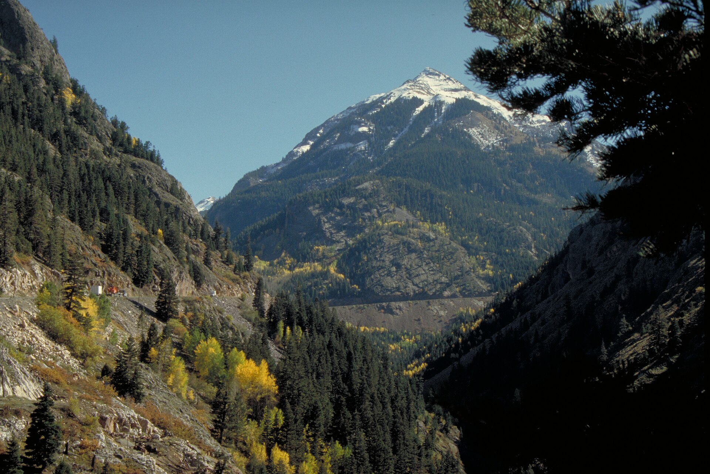
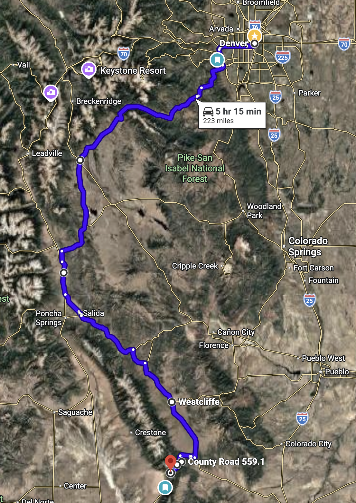
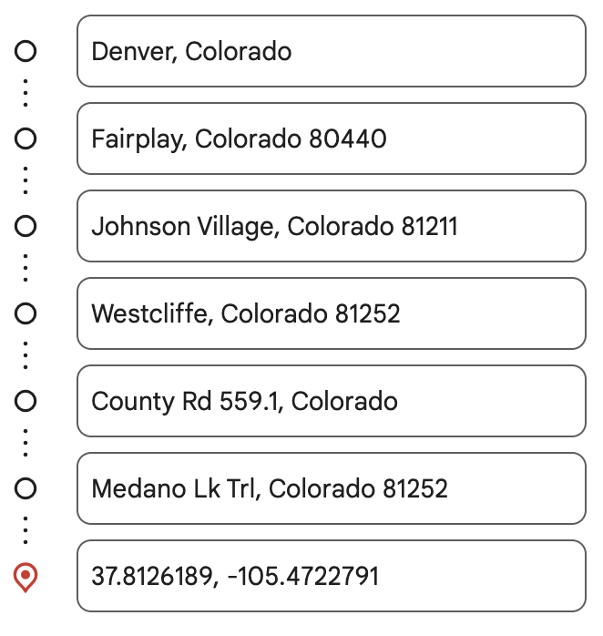
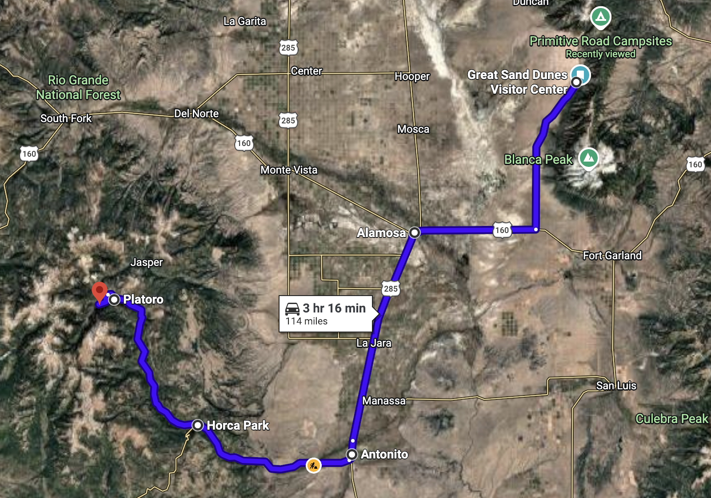
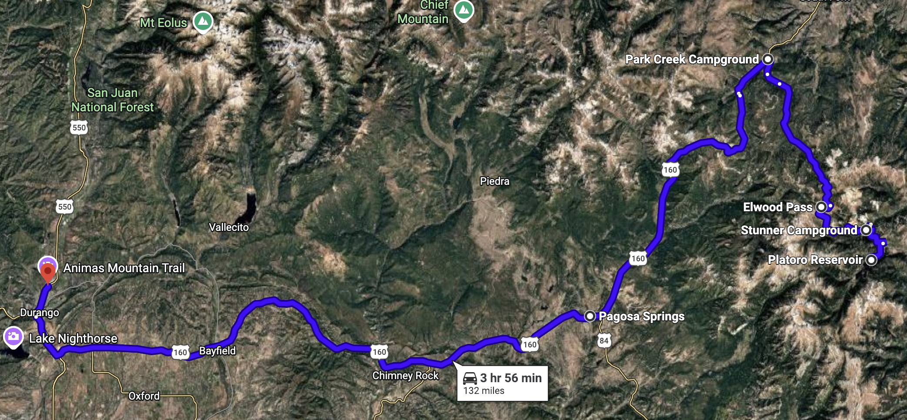
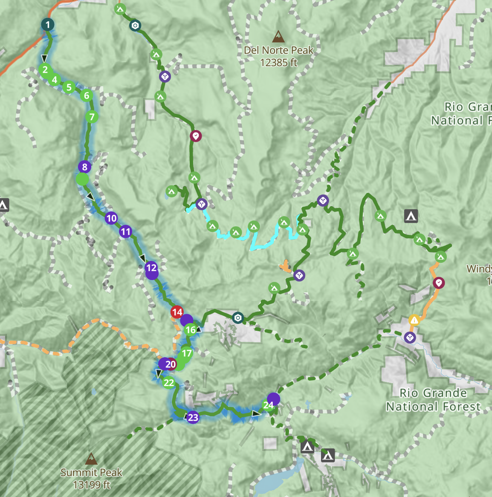
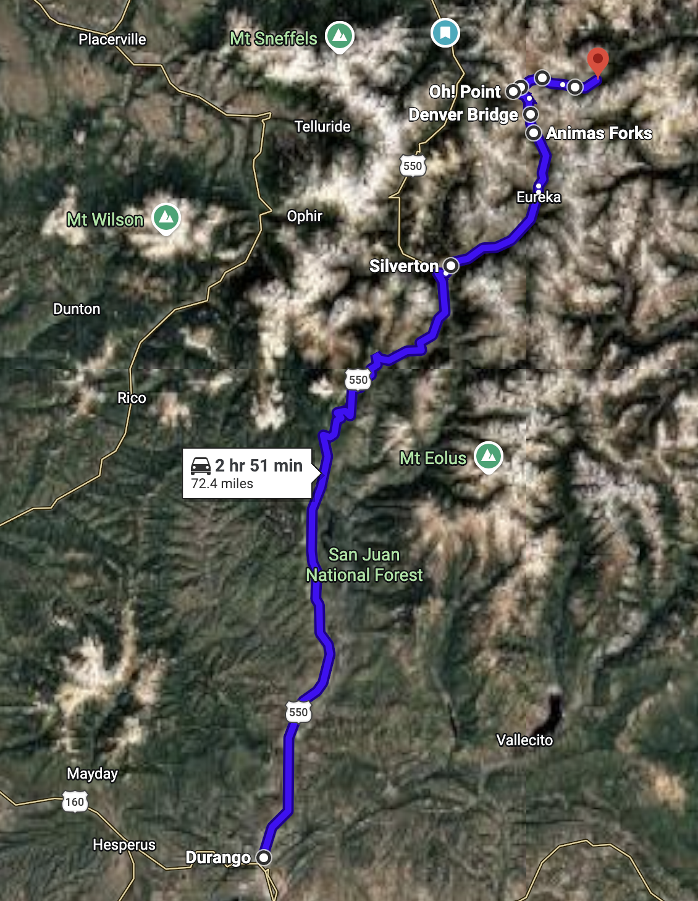
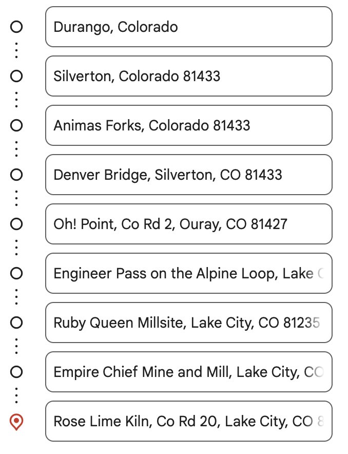
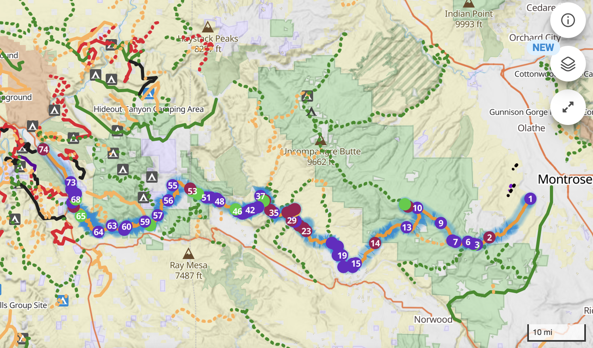

Colorado
| Date | Where | Drive | Sleep |
|---|---|---|---|
| Jun 21 | Denver → Medano Pass Rd | ~4 hrs +4WD | Medano Pass Primitive Rd (dispersed) |
| Jun 22 | Sand Dunes → Conejos → Platoro Reservoir | ~5 hrs +trail | Platoro Reservoir dispersed |
| Jun 23 | Park Creek Rd → Durango | ~3.5 hrs | Hampton Inn, Durango |
| Jun 24 | Million Dollar Hwy → Alpine Loop | ~3 hrs +trail | Alpine Loop dispersed |
| Jun 25 | Alpine Loop · Handies / American Basin | trail day | Alpine Loop dispersed |
| Jun 26 | Finish loop → Ouray | ~2 hrs | Quality Inn, Ouray |
| Jun 27 | Ouray → Montrose → Rimrocker | ~4 hrs +trail | Rimrocker dispersed (Paradox) |
| Jun 28 | Finish Rimrocker → Moab rim | trail day | Canyonlands Overlook / Arch |
| Jun 29 | Moab → Salt Lake City | ~3.5 hrs | Home 🏁 |
Navigate with OnX Offroad, TrailsOffroad & Gaia (search each trail by name) · Live weather loads at the top of every day.

🗺 OPEN IN GOOGLE MAPS →
🌄 What Tonight Feels Like
🎯 Choose Your Afternoon (arrive ~2–3 PM)
🥾 Short Hikes
💧 Zapata Falls
🏜️ First Dune Ridge
🏕️ Camp Tonight — Medano Pass Primitive Rd
- Where
- From camp, walk to the nearest open rise — or drop to the main dunes and climb the first ridge. The Sangres go alpenglow-pink while the sand turns amber.
- Why It Matters
- The dunes are backlit and shadow-carved in the last hour — the single most photogenic light of the day, and the crowds are gone.
- Worth It?
- Absolutely. Bring a layer; temps drop fast once the sun clears the ridge. → Dunes lot
- Top off in Westcliffe — last reliable gas before the pavement ends past Gardner
- No services past the dunes entrance — fill up full
- Air-down to ~18–20 psi at the Point of No Return for the sand

🗺 OPEN IN GOOGLE MAPS →🌄 What Today Feels Like
🎯 Choose Your Morning at the Dunes
🥾 Stretch-Your-Legs Stops on FSR 250
🐟 Conejos River / Spectacle Lake
🏞️ Platoro Reservoir Shore
🏕️ Camp Tonight — Platoro Reservoir
- Where
- The north shore of Platoro Reservoir — the water goes glassy at dusk and mirrors the peaks ringing the basin.
- Why It Matters
- Late light sets the surrounding ridges gold and the reflection doubles it; the air goes still and cold and the trout start rising.
- Worth It?
- Yes — but watch the western sky. If a cell is still around, tuck into Mix Lake's timber instead.
- Fill up in Alamosa (big stations) — and Antonito is your true last gas
- Top off water & ice in Antonito; nothing reliable past Horca
- Platoro may sell limited fuel/food seasonally — don't count on it

🗺 OPEN IN GOOGLE MAPS →🌄 What Today Feels Like
🎯 Choose Your Day
🗺️ Park Creek Rd — What You'll Pass (FSR 380, S→N)
🛖 Stunner Cabin & CG (mi 0): historic rebuilt cabin on the Alamosa River; 5 small sites, tables, fire pits, vault toilet — last easy water.
⛰️ Elwood Pass (mi ~9 from Stunner / 11,631 ft): the high point; East Fork Rd branches off here (harder, rocky — optional).
🛖 Elwood Cabin (mi 17.8 from Hwy 160 end): reservable 1911 telephone "line-shack" cabin overlooking Schinzel Flats (book on recreation.gov).
🏔️ Mountain View & Alpine Campsites: grassy plateaus with Cropsy, Montezuma & Long Trek peaks; the 11,266-ft Alpine site has pine wind-block from the west.
🌲 Big parks & aspen: Corral, Coal Mine & Trail Park meadows; a standout aspen overlook site near Demi John Rd; creek-side sites near the Hwy 160 end.
Dispersed camping is abundant the entire length — handy if you take Option B.

🏨 Tonight — Hampton Inn, Durango
| Hotel | Address | Reservation # | Notes |
|---|---|---|---|
| Hampton Inn Durango | 3777 Main Ave, Durango, CO 81301 | 93580647 | North Main near US-550. Pool, laundry nearby, breakfast included. Park the rig, charge devices, top off the cooler. |
- Where
- Durango's Animas River Trail or a Main Ave rooftop/patio. Low-key town evening — no need to chase a viewpoint tonight.
- Why It Matters
- It's your one town night between camps. Slow down, eat well (Steamworks or El Moro), and prep for the high country.
- Worth It?
- Rest beats a photo tonight. Save the lens for tomorrow's Molas Pass.
- Fill completely in Durango — gas is scarce and pricey once you're in the mountains
- Silverton has fuel tomorrow but it's limited & expensive — start full
- Grab an extra jerry can of fuel + water for two nights on the Alpine Loop

🗺 OPEN IN GOOGLE MAPS →
🌄 What Today Feels Like
🎯 Choose Your Day
🥾 Short Stops Today
🏚️ Animas Forks Ghost Town
🏔️ Molas Lake Overlook
📜 Mining History — Animas Forks
🏕️ Camp Tonight — Alpine Loop Dispersed
- Where
- From a high camp near Animas Forks/Engineer — the ruins and tundra catch the last light while the peaks go pink.
- Why It Matters
- Storms usually clear by evening up here, leaving crystal alpenglow and some of the darkest skies in Colorado for stargazing.
- Worth It?
- Yes — just be already camped. You don't want to be driving a high pass in fading light.
- You started full in Durango — top off again in Silverton before leaving pavement
- No fuel on the loop or in Lake City's backcountry — plan to run the whole loop on what you carry
- Air down for the rocky shelf roads; carry your spare fuel + water

🌄 What Today Feels Like
🎯 Choose Your Day
🥾 The Marquee Hike
⛰️ Handies Peak (14,058')
🌸 American Basin Floor
📜 Mining History — Engineer Pass, Henson & the Ute-Ulay
As you drop the Henson Creek side toward Lake City, take time to see the old town of Henson and the Ute-Ulay Mine. Prospectors Harry Henson, Joel Mullen, Albert Meade & Charles Goodwin struck the Ute and Ulay veins on August 27, 1871 — the area's first big silver-lead discovery. It went into production in 1874, sold to the Crooke Mining & Smelting Co. for $125,000 in 1876, and the wealth it threw off is what sparked the development of Lake City (where Enos Hotchkiss's Golden Fleece was another rich producer). The 1893 Silver Crash ended the boom; near the pass, the camp of Mineral Point faded with it. 📷 Photos to grab: Western Mining History: Otto Mears toll road · Legends of America: Henson & Ute-Ulay · History Colorado: Ute-Ulay · Wikimedia: Lake City
🏕️ Camp Tonight — Alpine Loop Dispersed
- Where
- The American Basin floor — late light sweeps the wildflowers and lights Handies and the cirque walls.
- Why It Matters
- After the storms clear, the basin glows and the columbine practically fluoresces. Then the Milky Way — this is Bortle-2 dark sky.
- Worth It?
- One of the best evenings of the trip. Layer up — it gets cold fast at 11,500 ft.
- No fuel up here — Lake City (down the Engineer/Henson Creek side) has gas
- Conserve: idle less, coast the descents, you've got tomorrow's drive to Ouray too
- Refill water from creeks with a filter — plenty of snowmelt

🌄 What Today Feels Like
📜 Mining History — Red Mountain District
🎯 Choose Your Afternoon in Ouray
🥾 Hikes in Detail
🔄 Ouray Perimeter Trail
💦 Box Cañon Falls
🏨 Tonight — Quality Inn, Ouray
| Hotel | Address | Reservation # | Notes |
|---|---|---|---|
| Quality Inn Ouray | 191 5th Ave, Ouray, CO 81427 | 38245206 | Walkable to hot springs, Main St dining, and Perimeter Trail access. Rinse the loop's dust off and recharge before the Rimrocker. |
- Where
- The Perimeter Trail overlook above town, or up the road toward Yankee Boy Basin for the amphitheater of peaks catching last light.
- Why It Matters
- Ouray sits in a bowl of 13ers — sunset paints the rims long after the valley floor is in shade.
- Worth It?
- Yes; then dinner on Main St. The hot springs stay open into the evening if you'd rather soak under the stars.
- Fuel in Silverton on the way out, or top off in Ouray tonight
- Tomorrow's Rimrocker has long stretches with no services — start full from Montrose
- Montrose (Day 7 AM) is the place for a big grocery + fuel resupply

🌄 What Today Feels Like
🎯 Choose Your Day
🧭 Rimrocker — Today's Waypoints (mi 0 → ~98)
mi 14.8 — Iron Springs CG: rustic FS camp, 8 tent sites + vault toilet.
mi 29.7 — Tabeguache Overlook: easy-to-miss pullout; great photo of the basin.
mi 30.5 — Columbine Pass / CG: turn left/south onto Delta-Nucla Rd; CG ½-mi north (6 sites).
mi ~52 — Nucla: no gas station here anymore — detour south on CO-97 to Naturita for fuel/supplies.
mi 68.8 — Tabeguache Creek crossing: ⚠️ 12–24″ deep & swift — the trip's most serious obstacle; stable rocky bottom, keep water out of the cab.
mi 71.7 — Rock Raven Mine / Uravan: overlook of the Uravan uranium ghost town (Manhattan-Project era, now an EPA Superfund); green-hued rock = ore.
mi 98.6 — "Epic Campsite": ridge dispersed site overlooking Paradox Valley — tonight's camp.

🏕️ Camp Tonight — Rimrocker Dispersed
- Where
- The Paradox Valley rim — the low sun rakes across the valley and the Dolores River canyon, lighting the red walls on fire.
- Why It Matters
- First true desert sunset of the trip and a giant sky. The geology here (a salt-collapse valley the river cuts across) is bizarre and beautiful in raking light.
- Worth It?
- Absolutely — just secure the rim site early so you're set up for it. Then a stargazing finale.
- Fill completely in Montrose + carry spare fuel — the Rimrocker is long and remote
- Nucla no longer has a gas station — detour ~10 min south on CO-97 to Naturita for fuel
- Next reliable services are in Moab tomorrow — carry water for 2 days

🌄 What Today Feels Like
🎯 Choose Your Last Camp
🥾 Optional Moab-Area Leg-Stretch
🪨 Corona Arch (if north)
🌄 Canyonlands Overlook rim (if south)
- Where
- Right at your rim camp — wherever you land, face the canyon. The last light turns the whole desert copper and the shadows go long across the mesas.
- Why It Matters
- The trip's final sunset. Then some of the darkest skies in the U.S. — Moab is near International Dark Sky parks.
- Worth It?
- This is the one to slow down for. Dinner on the tailgate, feet hanging over canyon country.
- Fuel up in Moab before heading to either rim — and again it's the launch point for tomorrow
- Load extra water; rim camps have none and it's hot
- Top off so you can leave straight for SLC without a town stop in the morning

🌄 What Today Feels Like
🎯 Optional Stops on the Way Home
🏁 Trip Stats
Reference & Appendix
Everything in one place for around the campfire: key coordinates, road/ranger phone numbers, and where the photos come from.
📍 Key Coordinates (cross-checked)
Pins were re-audited June 2026 against TopoZone/USGS, NPS, recreation.gov, 14ers.com, TheDyrt & TrailsOffroad (2+ source agreement). Full before/after list + the handful that still need a visual confirm: see VERIFY-PINS.md. Always re-verify against OnX/Gaia in the field — dispersed spots shift and some are approximate (marked “~ scout”).
| Day | Place | Lat, Lon | Type · Verify with |
|---|---|---|---|
| 1 | Medano Pass Primitive Rd camp (your pin) | 37.82401, -105.45907 | Camp · Google + NPS + your pin |
| 1 | Great Sand Dunes Visitor Center | 37.7337, -105.5107 | Stop · NPS |
| 1 | Zapata Falls Trailhead | 37.6216, -105.5595 | Hike · AllTrails + Google |
| 2 | Horca / FSR 250 (your pin) | 37.13094, -106.34928 | Waypoint · your pin |
| 2 | Platoro | 37.348, -106.531 | Town/fuel? · Google |
| 2 | Platoro Reservoir camp / Mix Lake CG | ~37.356, -106.535 | Camp · FS + Dyrt + scout |
| 3 | Treasure Falls TH | 37.4431, -106.8739 | Hike · AllTrails |
| 3 | Hampton Inn, Durango | 3777 Main Ave | Hotel · res #93580647 |
| 4 | Molas Lake | 37.7475, -107.6832 | Stop · Google |
| 4 | Animas Forks ghost town | 37.9311, -107.5715 | Stop · Google + BLM |
| 4 | South Mineral Creek dispersed | 37.8061, -107.7742 | Camp · FS + Dyrt |
| 5 | American Basin Trailhead | 37.9203, -107.5164 | Hike · AllTrails + COTREX |
| 5 | Handies Peak summit | 37.9131, -107.5042 | Summit · USGS |
| 6 | Red Mountain Pass | 37.8989, -107.7120 | Stop · CDOT |
| 6 | Box Cañon Falls, Ouray | 38.0195, -107.6769 | Hike · Google |
| 6 | Quality Inn, Ouray | 191 5th Ave | Hotel · res #38245206 |
| 3 | Park Creek Rd — Elwood Pass (high pt) | 11,631 ft | Trail · TrailsOffroad #380 |
| 3 | Elwood Cabin (reservable) | recreation.gov | Cabin · Rio Grande NF |
| 7 | Rimrocker TH — Dry Creek Rec Area | Montrose (mi 0) | Trailhead · air down · BLM |
| 7 | Montrose (resupply) | 38.4783, -107.8762 | Town · Google |
| 7 | Rimrocker "Epic Campsite" (Paradox) | ~38.33, -108.88 · mi 98.6 | Camp · TrailsOffroad + scout |
| 8 | Canyonlands Overlook (your pin) | 38.404384, -109.708790 | Camp · your pin + BLM |
| 8 | Arch/slickrock camp (your pin) | 38.710668, -109.729128 | Camp · your pin |
📞 Road Conditions & Ranger Contacts
| Agency | For | Phone |
|---|---|---|
| Great Sand Dunes NP | Medano Pass Rd / creek conditions | (719) 378-6395 |
| Rio Grande NF — Conejos Peak RD | FSR 250/380, Stunner, Platoro | (719) 274-8971 |
| San Juan NF / BLM Tres Rios | Durango / Silverton backcountry | (970) 247-4874 |
| BLM Gunnison FO | Alpine Loop / Lake City side | (970) 642-4940 |
| GMUG — Ouray RD (Montrose) | Ouray / Rimrocker east | (970) 240-5300 |
| BLM Moab FO | Moab rim camps / fire bans | (435) 259-2100 |
| CDOT / Colorado 511 · cotrip.org | Pass & highway status | 511 (in CO) |
🔧 Land Cruiser / Trip Notes
- Air-down kit + compressor — you'll use it on Medano sand, the Alpine Loop, and the Rimrocker.
- Carry spare fuel + 2 days of water before the Alpine Loop and the Rimrocker — services are sparse.
- Winter-rated sleeping bags: three nights sleep above ~10,000 ft and can hit freezing in late June.
- Rain jacket, gloves, hat for Handies — summit is 15–25°F colder than camp, off the top by noon.
- Download offline OnX/Gaia maps for the whole route in Durango (Day 3) while on wifi.
- Check fire bans (BLM Moab, Rio Grande NF, San Juan NF) — common by late June.
🖼️ Photos — How to Populate the Guide
The guide expects images named images/00.jpg (cover), images/01.jpg … 09.jpg (day banners), and images/day1-map.png … day9-map.png (route maps). Until they exist, each shows a labeled placeholder.
• Run python3 download_images.py to auto-fetch free, public-domain landmark photos from Wikimedia Commons into /images.
• Or drop your own photos into /images with those exact names.
• IMAGES.md lists every photo slot with 2–3 source links (Wikimedia, NPS, BLM, Forest Service) you can scrape from — all free to use.
• For route maps, screenshot each day's Google Maps directions (or OnX) and save as dayN-map.png.